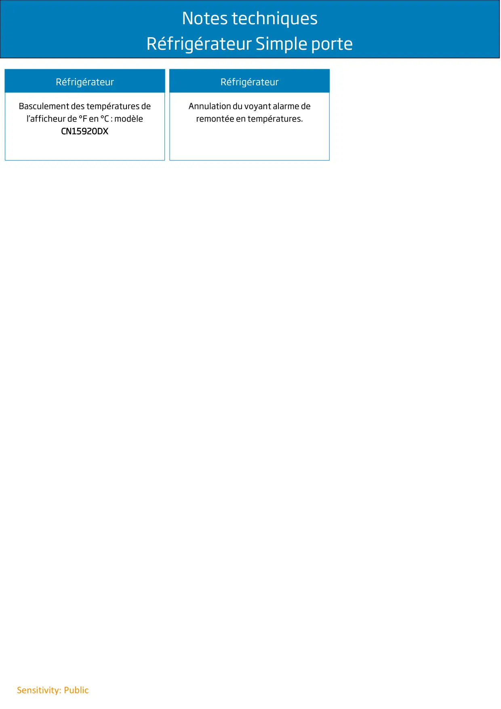

Infos techniques Simple porte

Notes techniquesRéfrigérateur Simple porteSensitivity: PublicRéfrigérateurBasculement des températures del’afficheur de °F en °C : modèleCN15920DXRéfrigérateurAnnulation du voyant alarme deremontée en températures.
1 / 1